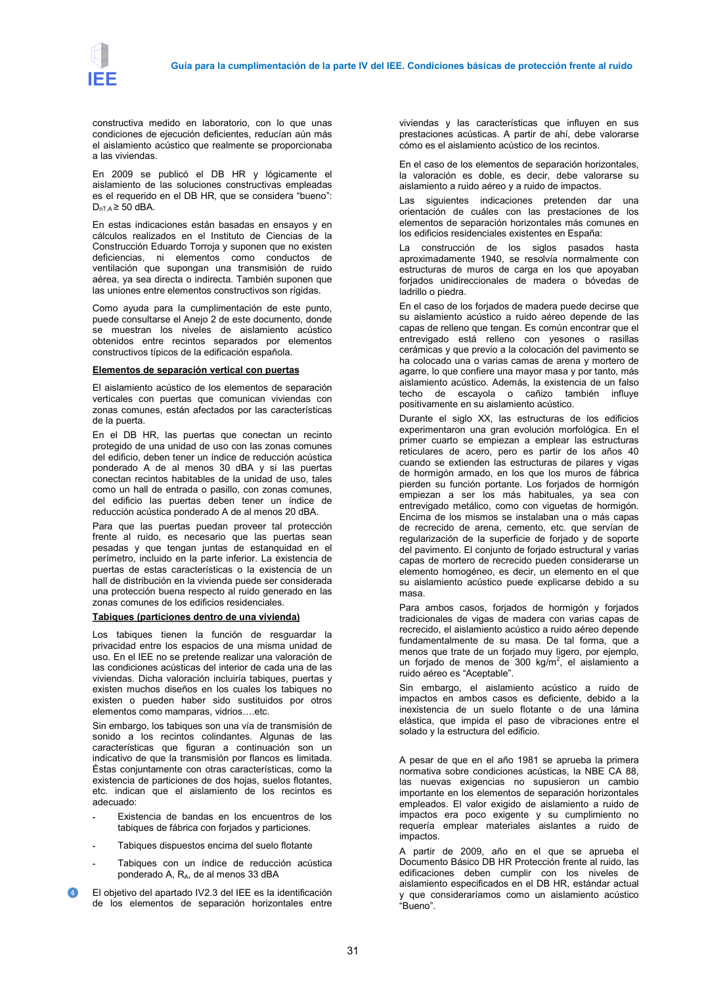

<!doctype html>
<html lang="es"><head><meta charset="utf-8">
<meta name="viewport" content="width=device-width, initial-scale=1">
<title>GUIA · IV.3. VALORACIÓN FINAL DE LAS PRESTACIONES BÁSICAS DE PROTECCIÓN FRENTE AL RUIDO</title><link rel="stylesheet" href="../estilo.css">
</head><body>
<nav><a href="../index.html">Índice</a> › <a href="../doc/guia-pdf-a5d4ef5252ba-2016-11-01-813669d3066c.html">GUIA</a> › a0018</nav>

<header class="meta">
<p><a href="../doc/guia-pdf-a5d4ef5252ba-2016-11-01-813669d3066c.html">GUIA</a> · IV.3. VALORACIÓN FINAL DE LAS PRESTACIONES BÁSICAS DE PROTECCIÓN FRENTE AL RUIDO · versión 2016-11-01 · capa guia</p>
</header>
<div class="cita"><strong>Cita:</strong> GUIA · ID técnico a0018 · IV.3. VALORACIÓN FINAL DE LAS PRESTACIONES BÁSICAS DE PROTECCIÓN FRENTE AL RUIDO · páginas físicas pág. 29-33 (impresas: ['29', '30', '31', '32', '33'])</div>
<p>Formatos: <a href="../../contenido/docs/GUIA-PDF-a5d4ef5252ba/2016-11-01__813669d3066c/apartado/a0018__iv-3-valoracion-final-de-las-prestaciones-basicas-de-pro.json">JSON compacto</a> · <a href="../../contenido/docs/GUIA-PDF-a5d4ef5252ba/2016-11-01__813669d3066c/apartado/a0018__iv-3-valoracion-final-de-las-prestaciones-basicas-de-pro.md">Markdown</a> · <a href="../../contenido/docs/GUIA-PDF-a5d4ef5252ba/2016-11-01__813669d3066c/fuente.pdf">PDF fuente</a></p>
<p><a href="../doc/guia-pdf-a5d4ef5252ba-2016-11-01-813669d3066c.html">Ámbito del documento</a> · <a href="../doc/guia-pdf-a5d4ef5252ba-2016-11-01-813669d3066c.html#ambito">texto del ámbito</a> ·
<a href="../doc/guia-pdf-a5d4ef5252ba-2016-11-01-813669d3066c.html">documento y tablas</a></p>
<nav><a href="guia-pdf-a5d4ef5252ba-2016-11-01-813669d3066c__a0017.html">← sección,</a> <a href="guia-pdf-a5d4ef5252ba-2016-11-01-813669d3066c__a0019.html">IV.4. RECOMENDACIONES PARA LA MEJORA DE PROTECCIÓN FRENTE AL RUIDO IV.4.1. MEDIDAS DE MEJORA →</a></nav>
<h1>IV.3. VALORACIÓN FINAL DE LAS PRESTACIONES BÁSICAS DE PROTECCIÓN FRENTE AL RUIDO</h1>
<p>Tipo: referencias, formulas, tablas, figuras · nivel 3 · sección estimada: Anejo 3. Valoración del aislamiento acústico de elementos de separación horizontales y sus mejoras · padre: a0017</p>
<pre class="literal">IV.3. VALORACIÓN FINAL DE LAS PRESTACIONES BÁSICAS DE PROTECCIÓN FRENTE AL RUIDO
IV.3. VALORACIÓN FINAL DE LAS PRESTACIONES BÁSICAS DE PROTECCIÓN FRENTE AL RUIDO ❶
El técnico competente abajo firmante valora que las condiciones acústicas son:
BUENO
RAZONABLE
REGULAR
DEFICIENTE
Protección frente al RUIDO EXTERIOR ❷




Protección contra al RUIDO INTERIOR procedente de
otras viviendas
- Aislamiento acústico a ruido aéreo
•
Recintos colindantes verticalmente ❸




•
Recintos colindantes horizontalmente ❹




- Aislamiento acústico a ruido de impactos ❹
•
Recintos colindantes verticalme te




•
Recintos colindantes horizontalmente o con
una arista horizontal común




Protección frente al RUIDO DE INSTALACIONES ❺




OBSERVACIONES ❻
❶
En este apartado, el técnico debe realizar una valoración
cualitativa de las condiciones acústicas de protección
frente a:
-
Ruido procedente del exterior, es decir, fachadas y
cubiertas.
-
Ruido interior procedente de otras viviendas,
recintos
de
instalaciones
o
de
actividad
(elementos
de
separación
verticales
y
horizontales):
•
Aéreo, para recintos colindantes vertical y
horizontalmente.
•
Impactos, para recintos colindantes vertical y
horizontalmente o con una arista horizontal
común.
-
Ruido de instalaciones (equipos y redes).
La valoración es cualitativa y se establece en términos
de “Bueno”, “Razonable”, “Regular” y “Deficiente”. Es el
técnico el que según su experiencia debe valorar las
condiciones acústicas y en este sentido, debe decirse
que dentro de la edificación residencial existe una
amplia casuística de tipologías edificatorias y de
soluciones constructivas y no se pueden dictar reglas
fijas.
El método más adecuado y exacto de conocer el
aislamiento acústico de los edificios, es la realización de
ensayos de aislamiento acústico, de esta manera, es
posible, determinar con exactitud el aislamiento acústico
de los edificios. Sin embargo, ante la ausencia de los
mismos, la parte IV se basa en una inspección que
intenta detectar cuáles son los sistemas constructivos
empleados y a partir de ahí, poder deducir sus
comportamiento acústico, sabiendo que esto siempre va
a ser una aproximación.
En cuanto a la escala de valoración, Bueno,
Razonable, Regular y Deficiente, podríamos decir que
un aislamiento acústico bueno correspondería a un nivel
de aislamiento acústico superior al establecido en el DB
HR. Un nivel Razonable sería aquél que se acerca, y los
niveles Regular y Deficiente son aquéllos que se alejan
de las exigencias del estándar actual que es el marcado
por el Código Técnico de la Edificación.
Como se ha comentado en el apartado 1, las
condiciones acústicas deben valorarse recinto a recinto,
sin embargo, el apartado IV del IEE trata de establecer
una valoración general. No obstante en el apartado de
observaciones pueden incluirse aquellos casos que se
aparten de la generalidad del edificio y en los que el
aislamiento sea más favorable o desfavorable.
Las siguientes indicaciones son orientativas y tienen
como objetivo establecer una primera valoración de las
soluciones constructivas:
❷
La valoración de la fachada debe hacerse teniendo en
cuenta el nivel de ruido exterior en el entorno del edificio
y de las características de los huecos. En este sentido,
debe darse un tratamiento diferenciado a fachadas que
estén expuestas a niveles de ruido diferentes, por

Guía para la cumplimentación de la parte IV del IEE. Condiciones básicas de protección frente al ruido
30
ejemplo, fachadas que den a patios de manzana o
entornos tranquilos frente a fachadas que den a una vía
de tráfico rodado.
De la misma manera debe tenerse en cuenta las
situaciones en las que existan paños de fachadas donde
predominen las superficies acristaladas o donde haya
ventanas
diferentes.
(Dobles
ventanas,
ventanas
correderas, etc.)
Es importante resaltar que la valoración debe hacerse
para recintos protegidos, tales como salones y
dormitorios.
En el caso del aislamiento acústico de la fachada y
cubierta, el elemento más importante es el hueco, es
decir, la ventana o el lucernario. Cuando se calcula el
aislamiento acústico de una solución mixta, es decir,
aquélla formada por una parte opaca y un hueco, es el
elemento débil (normalmente el hueco) el que establece
el rango de aislamiento de la solución mixta, siendo el
aislamiento mixto máximo 10 dB mayor que el del
hueco. La parte opaca de la fachada o cubierta
contribuye mínimamente al aislamiento acústico de los
recintos y únicamente tiene una incidencia notable en el
aislamiento acústico de los recintos, si es ligera (masa
por unidad de superficie de menor que 135 kg/m2) y el
edificio
está
en
una
zona
muy
contaminada
acústicamente (Ld ≥ 70 dB).
Analizando las tipologías de ventanas en edificios
existentes, las antiguas ventanas con vidrio monolítico y
carpintería de madera o de acero, dieron paso a las
ventanas correderas de aluminio. Tanto unas como
otras, suelen presentar problemas de estanquidad
producidos por el uso y por la pérdida de sellado. La
existencia de este tipo de ventanas en entornos ruidosos
es un indicativo de que el aislamiento del edificio frente
a ruido exterior es regular o deficiente.
Por el contrario, las dobles ventanas, es decir, la
instalación de dos ventanas, suponen una mejora del
aislamiento acústico a ruido aéreo, que podría calificarse
como bueno.
La existencia de capialzados realizados in situ supone
una vía de penetración del aire y del ruido al interior. La
tapa registrable poco estanca, la ausencia de un
material absorbente acústico en la cámara y una holgura
excesiva entre la caja y la persiana, tienen como
consecuencia un aislamiento acústico deficiente.
En cuanto al conjunto formado por el capialzado y la
ventana, ambos deben tener un buen aislamiento
acústico para que el resultado de aislamiento global de
la fachada sea bueno. Si la ventana presenta un buen
comportamiento acústico, pero el capialzado es poco
estanco, el aislamiento global de la fachada será pobre y
a la inversa.
❸
El objetivo del apartado IV2.2 del IEE es la identificación
de los elementos de separación verticales entre
viviendas y las características que influyen en sus
prestaciones acústicas. A partir de ahí, debe valorarse
cómo es el aislamiento acústico de los recintos.
Una vez más, debe repetirse que no pueden dictarse
unas reglas fijas y que las prestaciones reales de un
edificio sólo pueden determinarse de forma precisa
mediante ensayos de aislamiento acústico, sin embargo,
en este documento se quiere dar una orientación
basada en el conocimiento de las prestaciones típicas
de soluciones constructivas más habituales en los
edificios residenciales existentes.
Además, existe la dificultad añadida de identificar los
elementos constructivos, ya que si no figuran en la
documentación de proyecto, no se realiza una cata o no
se conoce el edificio es difícil conocer la composición
constructiva de los elementos que forman la separación
entre viviendas. En estos casos, al menos el espesor es
indicativo del tipo de solución constructiva empleada.
La valoración de las prestaciones acústicas es
cualitativa, a priori no es posible dictar unas reglas de
valoración, ya que depende del tipo de proyecto y grado
de molestia, sin embargo, una posible valoración puede
realizarse según el grado de acercamiento a los niveles
de aislamiento acústico exigidos en el DB HR
Las
siguientes
indicaciones
pretenden
dar
una
orientación de cómo evaluar los elementos constructivos
más comunes en los edificios residenciales existentes
en España.
Elementos de separación verticales entre viviendas
La
construcción
de
los
siglos
pasados
hasta
aproximadamente 1940, está caracterizada de forma
general por estructuras de muros de carga de fábrica,
mampuesto, sillería, tapial, adobe, etc., incluidos
también los muros de entramado de madera a base de
pies derechos y carreras que están rellenos de piedra,
ladrillo, etc.
En este periodo las particiones suelen tener más de un
pie de espesor (25 cm) su aislamiento acústico a ruido
aéreo es aceptable, suficiente como para no causar
molestias graves cuando se trata de una actividad
vecinal normal. Es probable que la diferencia de niveles
estandarizada pondera A, DnT,esté comprendida entre
45 y 50 dBA.
En la segunda mitad del siglo XX, hasta 1981, las
estructuras de los edificios experimentaron una gran
evolución morfológica. Durante el primer cuarto se
empiezan a emplear las estructuras reticulares de acero,
pero es partir de los años 40 cuando se extienden las
estructuras de pilares y vigas de hormigón armado, en
los que los muros de fábrica pierden su función portante
para ser simplemente divisiones que se insertan en la
estructura del edificio. De esta forma, se aligeran y
afinan
las
particiones,
con
la
correspondiente
disminución de aislamiento acústico. Generalmente, el
aislamiento acústico, definido como DnT,A , de los
recintos en los que las particiones son bloque de ladrillo
hueco de 60 a 110 mm, es inferior a los 40 dBA y puede
ser considerado como deficiente.
En 1981 se aprueba la primera normativa que establece
valores mínimos de aislamiento acústico en los edificios:
la Norma Básica de la Edificación NBE CA 81 sobre
condiciones acústicas, modificada posteriormente en
1988.
Según esta norma, el valor de aislamiento acústico a
ruido aéreo exigido a las particiones era RA ≥ 45 dBA y
supuso una mejora ligera del aislamiento acústico de las
particiones verticales, que para cumplir con la exigencia
establecida debían tener una masa por unidad de
superficie de al menos 200 – 250 kg/m2. Habitualmente
se utilizaban muros de medio pie perforado y enlucido
por las dos caras, y el tabique de dos hojas de ladrillo
hueco de 70 mm – 110 mm de espesor cada una, sin
que fuera habitual la colocación de lana mineral en la
cámara. El aislamiento acústico de estas soluciones en
términos de DnT,A, está comprendido entre los 40 y 45
dBA, y por lo tanto puede ser considerado “regular”.
Las exigencias de la NBE CA88 se establecían en
términos de aislamiento acústico de la solución

Guía para la cumplimentación de la parte IV del IEE. Condiciones básicas de protección frente al ruido
31
constructiva medido en laboratorio, con lo que unas
condiciones de ejecución deficientes, reducían aún más
el aislamiento acústico que realmente se proporcionaba
a las viviendas.
En 2009 se publicó el DB HR y lógicamente el
aislamiento de las soluciones constructivas empleadas
es el requerido en el DB HR, que se considera “bueno”:
DnT,A ≥ 50 dBA.
En estas indicaciones están basadas en ensayos y en
cálculos realizados en el Instituto de Ciencias de la
Construcción Eduardo Torroja y suponen que no existen
deficiencias,
ni
elementos
como
conductos
de
ventilación que supongan una transmisión de ruido
aérea, ya sea directa o indirecta. También suponen que
las uniones entre elementos constructivos son rígidas.
Como ayuda para la cumplimentación de este punto,
puede consultarse el Anejo 2 de este documento, donde
se muestran los niveles de aislamiento acústico
obtenidos entre recintos separados por elementos
constructivos típicos de la edificación española.
Elementos de separación vertical con puertas
El aislamiento acústico de los elementos de separación
verticales con puertas que comunican viviendas con
zonas comunes, están afectados por las características
de la puerta.
En el DB HR, las puertas que conectan un recinto
protegido de una unidad de uso con las zonas comunes
del edificio, deben tener un índice de reducción acústica
ponderado A de al menos 30 dBA y si las puertas
conectan recintos habitables de la unidad de uso, tales
como un hall de entrada o pasillo, con zonas comunes,
del edificio las puertas deben tener un índice de
reducción acústica ponderado A de al menos 20 dBA.
Para que las puertas puedan proveer tal protección
frente al ruido, es necesario que las puertas sean
pesadas y que tengan juntas de estanquidad en el
perímetro, incluido en la parte inferior. La existencia de
puertas de estas características o la existencia de un
hall de distribución en la vivienda puede ser considerada
una protección buena respecto al ruido generado en las
zonas comunes de los edificios residenciales.
Tabiques (particiones dentro de una vivienda)
Los tabiques tienen la función de resguardar la
privacidad entre los espacios de una misma unidad de
uso. En el IEE no se pretende realizar una valoración de
las condiciones acústicas del interior de cada una de las
viviendas. Dicha valoración incluiría tabiques, puertas y
existen muchos diseños en los cuales los tabiques no
existen o pueden haber sido sustituidos por otros
elementos como mamparas, vidrios=.etc.
Sin embargo, los tabiques son una vía de transmisión de
sonido a los recintos colindantes. Algunas de las
características que figuran a continuación son un
indicativo de que la transmisión por flancos es limitada.
Éstas conjuntamente con otras características, como la
existencia de particiones de dos hojas, suelos flotantes,
etc. indican que el aislamiento de los recintos es
adecuado:
-
Existencia de bandas en los encuentros de los
tabiques de fábrica con forjados y particiones.
-
Tabiques dispuestos encima del suelo flotante
-
Tabiques con un índice de reducción acústica
ponderado A, RA, de al menos 33 dBA
❹
El objetivo del apartado IV2.3 del IEE es la identificación
de los elementos de separación horizontales entre
viviendas y las características que influyen en sus
prestaciones acústicas. A partir de ahí, debe valorarse
cómo es el aislamiento acústico de los recintos.
En el caso de los elementos de separación horizontales,
la valoración es doble, es decir, debe valorarse su
aislamiento a ruido aéreo y a ruido de impactos.
Las
siguientes
indicaciones
pretenden
dar
una
orientación de cuáles con las prestaciones de los
elementos de separación horizontales más comunes en
los edificios residenciales existentes en España:
La
construcción
de
los
siglos
pasados
hasta
aproximadamente 1940, se resolvía normalmente con
estructuras de muros de carga en los que apoyaban
forjados unidireccionales de madera o bóvedas de
ladrillo o piedra.
En el caso de los forjados de madera puede decirse que
su aislamiento acústico a ruido aéreo depende de las
capas de relleno que tengan. Es común encontrar que el
entrevigado está relleno con yesones o rasillas
cerámicas y que previo a la colocación del pavimento se
ha colocado una o varias camas de arena y mortero de
agarre, lo que confiere una mayor masa y por tanto, más
aislamiento acústico. Además, la existencia de un falso
techo
de
escayola
o
cañizo
también
influye
positivamente en su aislamiento acústico.
Durante el siglo XX, las estructuras de los edificios
experimentaron una gran evolución morfológica. En el
primer cuarto se empiezan a emplear las estructuras
reticulares de acero, pero es partir de los años 40
cuando se extienden las estructuras de pilares y vigas
de hormigón armado, en los que los muros de fábrica
pierden su función portante. Los forjados de hormigón
empiezan a ser los más habituales, ya sea con
entrevigado metálico, como con viguetas de hormigón.
Encima de los mismos se instalaban una o más capas
de recrecido de arena, cemento, etc. que servían de
regularización de la superficie de forjado y de soporte
del pavimento. El conjunto de forjado estructural y varias
capas de mortero de recrecido pueden considerarse un
elemento homogéneo, es decir, un elemento en el que
su aislamiento acústico puede explicarse debido a su
masa.
Para ambos casos, forjados de hormigón y forjados
tradicionales de vigas de madera con varias capas de
recrecido, el aislamiento acústico a ruido aéreo depende
fundamentalmente de su masa. De tal forma, que a
menos que trate de un forjado muy ligero, por ejemplo,
un forjado de menos de 300 kg/m2, el aislamiento a
ruido aéreo es “Aceptable”.
Sin embargo, el aislamiento acústico a ruido de
impactos en ambos casos es deficiente, debido a la
inexistencia de un suelo flotante o de una lámina
elástica, que impida el paso de vibraciones entre el
solado y la estructura del edificio.
A pesar de que en el año 1981 se aprueba la primera
normativa sobre condiciones acústicas, la NBE CA 88,
las nuevas exigencias no supusieron un cambio
importante en los elementos de separación horizontales
empleados. El valor exigido de aislamiento a ruido de
impactos era poco exigente y su cumplimiento no
requería emplear materiales aislantes a ruido de
impactos.
A partir de 2009, año en el que se aprueba el
Documento Básico DB HR Protección frente al ruido, las
edificaciones deben cumplir con los niveles de
aislamiento especificados en el DB HR, estándar actual
y que consideraríamos como un aislamiento acústico
“Bueno”.

Guía para la cumplimentación de la parte IV del IEE. Condiciones básicas de protección frente al ruido
32
En resumen:
Si en el forjado no existe un suelo flotante, moqueta o
tarima flotante, es decir, una solución de lámina elástica
interpuesta entre el solado y la cara superior del
elemento de separación horizontal donde van a
producirse las pisadas, impactos=etc. la valoración de
ruido de impactos debe ser “Regular” o “Deficiente”.
Para valorar el aislamiento a ruido aéreo de los
elementos de separación homogéneos, puede evaluarse
la masa por unidad de superficie del forjado. Cuando
encima del forjado existan varias capas de recrecido de
mortero, arena, etc. sin que haya una lámina elástica, la
masa de estas capas puede sumarse a la masa del
forjado. Como se ha mencionado anteriormente, para
elementos constructivos de masa por unidad de
superficie de al menos de 300 kg/m2, el aislamiento
acústico es “Aceptable”.
Como ayuda para la cumplimentación de este punto,
puede consultarse el Anejo 3 de este documento, donde
se muestran los niveles de aislamiento acústico
obtenidos entre recintos separados por elementos
constructivos típicos de la edificación española.
❺
En cuanto al ruido de instalaciones, es prácticamente
imposible establecer una valoración acústica tras una
inspección
visual.
Sin
embargo,
hay
algunas
características que indican la posible existencia de
problemas, tales como:
-
Cuartos de instalaciones que no tengan un
aislamiento acústico integral en los que haya
equipos generadores de ruido y vibraciones y que
sean colindantes con recintos protegidos.
-
Equipos situados colindantes a recintos protegidos
que carezcan de un sistema amortiguante, tales
como amortiguadores o bancada de inercia.
-
Presencia de equipos de instalaciones, tales como
máquinas
de
aire
acondicionado
cerca
de
ventanas, situadas en patios de luces, etc.
-
Cuartos
húmedos
colindantes
con
recintos
protegidos de otras unidades de uso.
-
Codos en la red de saneamiento descolgada que
trascurran en recintos protegidos como dormitorios
y salones.
-
Puertas de garaje ancladas de forma rígida a la
fachada de recintos protegidos,
Debe tenerse en cuenta que debe valorarse el grado de
afección de los recintos protegidos y en la valoración de
ruido de instalaciones es fundamental la opinión de los
usuarios.
❻
En este apartado puede consignarse cualquier aspecto
no comentado anteriormente que pueda influir en la
valoración del aislamiento acústico.

Guía para la cumplimentación de la parte IV del IEE. Condiciones básicas de protección frente al ruido
33</pre>
<h2>Referencias detectadas</h2><ul><li>DB HR</li><li>En 1981</li><li>En 2009</li><li>apartado 1</li><li>en
1988</li></ul><p class="aviso">1 referencias con forma DB se han ocultado por no cumplir la sintaxis oficial; la lista original sigue en el JSON.</p><h2>Tablas en estas páginas</h2><ul><li>p. 29 · <a href="../../contenido/docs/GUIA-PDF-a5d4ef5252ba/2016-11-01__813669d3066c/tabla/p0029_t01.json">p0029_t01.json</a> · <a href="../../contenido/docs/GUIA-PDF-a5d4ef5252ba/2016-11-01__813669d3066c/tabla/p0029_t01.csv">.csv</a></li><li>p. 33 · <a href="../../contenido/docs/GUIA-PDF-a5d4ef5252ba/2016-11-01__813669d3066c/tabla/p0033_t01.json">p0033_t01.json</a> · <a href="../../contenido/docs/GUIA-PDF-a5d4ef5252ba/2016-11-01__813669d3066c/tabla/p0033_t01.csv">.csv</a></li></ul><h2>Página visual</h2><figure><a href="../../contenido/docs/GUIA-PDF-a5d4ef5252ba/2016-11-01__813669d3066c/figura/p0029.png"></a><figcaption>Página visual 29 (fuente para fórmulas/tablas/figuras)</figcaption></figure><figure><a href="../../contenido/docs/GUIA-PDF-a5d4ef5252ba/2016-11-01__813669d3066c/figura/p0030.png"></a><figcaption>Página visual 30 (fuente para fórmulas/tablas/figuras)</figcaption></figure><figure><a href="../../contenido/docs/GUIA-PDF-a5d4ef5252ba/2016-11-01__813669d3066c/figura/p0031.png"></a><figcaption>Página visual 31 (fuente para fórmulas/tablas/figuras)</figcaption></figure><figure><a href="../../contenido/docs/GUIA-PDF-a5d4ef5252ba/2016-11-01__813669d3066c/figura/p0032.png"></a><figcaption>Página visual 32 (fuente para fórmulas/tablas/figuras)</figcaption></figure><figure><a href="../../contenido/docs/GUIA-PDF-a5d4ef5252ba/2016-11-01__813669d3066c/figura/p0033.png"></a><figcaption>Página visual 33 (fuente para fórmulas/tablas/figuras)</figcaption></figure><p class="aviso">PDF fuente redistribuible: copia fiel enlazada en esta página (SHA256 verificado).</p>
<footer>Generado estáticamente desde JSON normalizado; sin JavaScript ni servicios externos.
El JSON es la fuente; este HTML es caché reproducible.</footer>
</body></html>
